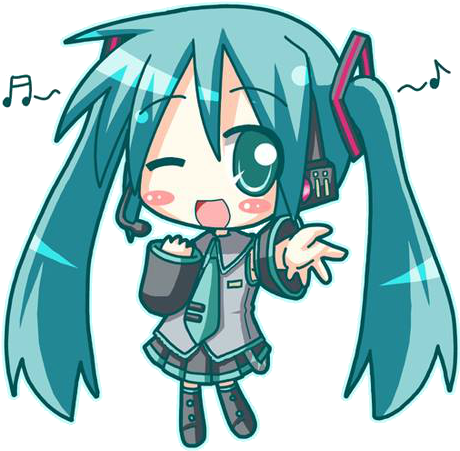

Bienvenue sur mon portfolio ! Je m'appelle Neme, étudiant en 2ème année de BTS SIO option SLAM (Solutions Logicielles et Applications Métiers). Je suis passionné par la programmation logicielle, le web et les jeux vidéo.

Retrouvez toutes les composantes de mon cursus BTS SIO, mes travaux pratiques, mes projets et mes coordonnées.
Découvrez ma présentation, mes ambitions dans le jeu vidéo et les logiciels, mon parcours scolaire au CNED et les détails du BTS SIO SLAM.
Consulter mon profil ➔Langages (C#, Java, PHP, Python), SGBD (MySQL), modélisation UML/Merise, CMS WordPress et qualité logicielle avec SonarLint.
Voir mes compétences ➔Découvrez l'Atelier 2 MediaTek 86 (C# / MySQL) avec documentation, script SQL et installateur, ainsi que mes réalisations Java, Web et Python.
Explorer mes projets ➔Définition de la veille, utilité pour un développeur, outils de collecte d'informations et sujet thématique BTS SIO.
Lire la veille ➔